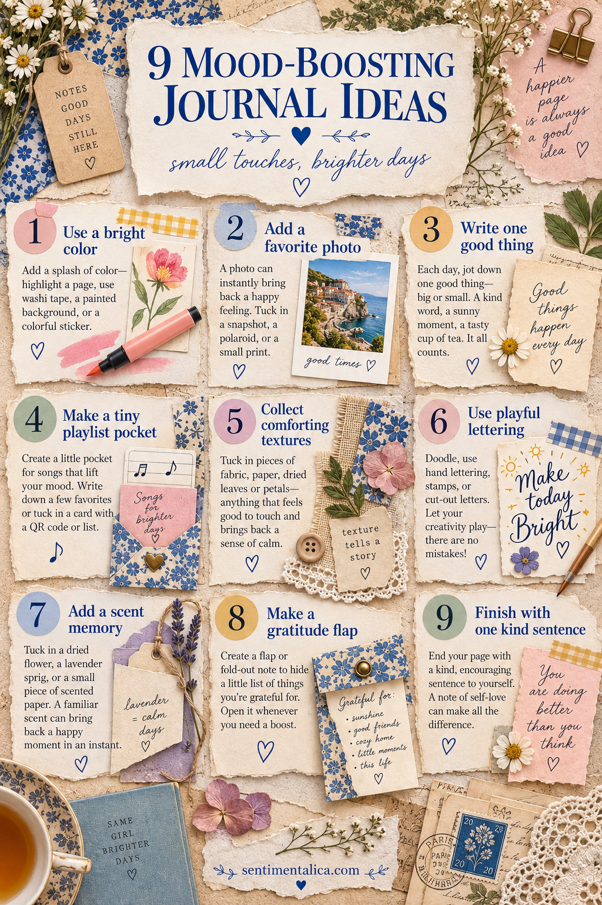
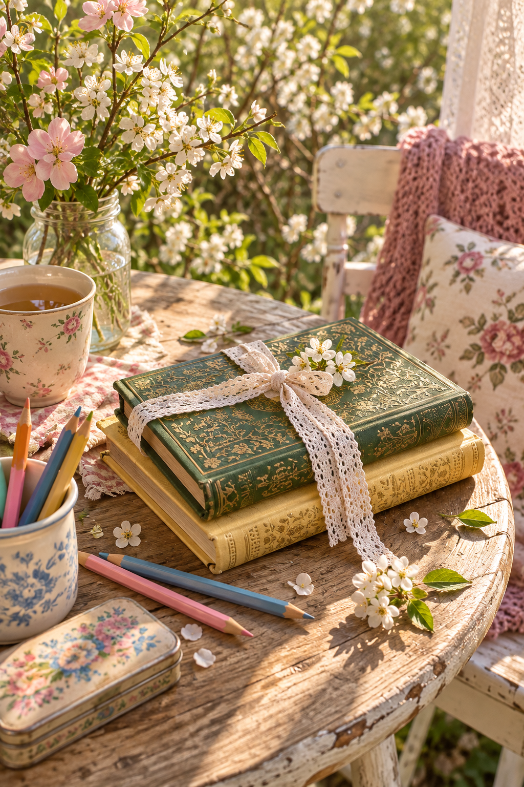

A journal cannot solve every difficult day, but it can change the next twenty minutes. The most helpful pages are not forced positivity. They give your attention somewhere warm, playful or kind to rest.

Add one brighter color
Choose a color that feels awake—coral, cornflower blue, honey or leaf green. Use it in one strong patch, then repeat it twice in smaller marks.
Include a favorite photograph
Pick an image that returns you to a good feeling rather than the most technically perfect photo. Write what you remember outside the frame.
Record one good thing
Make it specific: warm bread, a message from a friend, sunlight on the floor. Small observations are easier to believe than grand declarations.
Create a playlist pocket
Fold a small pocket and tuck in a list of three songs. Add the date so the music becomes part of the memory.
Collect comforting textures
Soft fabric, smooth tracing paper, thick card and a dry leaf can make the page pleasant to touch. Use only two or three so it still closes easily.
Play with lettering
Write one word in colored pencil, cut letters from packaging or stamp an imperfect title. Let the process be slightly silly.
Add a scent memory
Write about cinnamon, rain, soap, coffee or a familiar room. Avoid applying oils directly to archival pages; words can carry the scent safely.
Hide a gratitude list
Place three quiet gratitudes beneath a flap. The private movement of opening it can feel more personal than a decorative headline.
Finish with one kind sentence
Write to yourself as you would to a tired friend. “You did enough today” belongs in a real journal.

Choose only one idea when energy is low. Mood-boosting journaling works through attention, not quantity: one true good thing can be the whole page.
Build a reusable brighter-days envelope
Keep a few reliable materials together: two cheerful paper colors, small plain labels, a favorite pen, one comforting photograph and several empty pockets. This is not an emergency kit that demands a result. It simply shortens the distance between wanting a lift and beginning a page.
Avoid filling it only with motivational phrases. Sometimes an honest page that says “today was difficult, and the tea was good” feels kinder than insisting everything is wonderful. Contrast gives the bright detail credibility.
You can also work through the senses. Choose a color you want to see, a texture you enjoy touching, a song you want to hear and one remembered scent. Translate each into paper, fabric, handwriting or a tiny list. The page becomes a gentle sensory environment.
When you finish, notice whether one part made you smile or breathe more slowly. Repeat that element next time. Your personal mood-boosting vocabulary might be blue pencil, garden photographs and hidden notes; someone else’s may be bold lettering and candy-colored packaging. The useful palette is the one that genuinely reaches you.